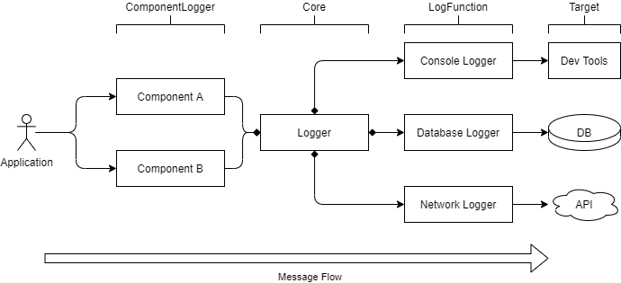

<p align="center"> <img alt="LogSemTS Logo" height="300" src="assets/logo.png" /> </p>
@fliegwerk/logsemts - A modular, semantic logger written in TypeScript
npm package | Library Documentation


A modular, color-coded, TypeScript-based semantic logger that can be used in NodeJS, the browser and in many other scenarios.
Example
// Import the logger:
import Logger, { BrowserLogger } from '@fliegwerk/logsemts';
// Create a new logger
const logger = new Logger({
loggers: [BrowserLogger()] // that exclusively outputs to the browser dev tools
});
// get a new subsystem logger for the API Client
const apiClientLogger = logger.getComponentLogger('API Client');
// log a success message
apiClientLogger.success('Data fetched successfully');
Installation
$ npm install @fliegwerk/logsemts
or
$ yarn add @fliegwerk/logsemts
Concept

There are three primary components in logsemts:
- Component Loggers: Logger objects for specific subsystems (for example, an API connector and a login form).
These objects contain functions like
.log(),.debug(),.warn(), etc. to log messages regarding this subsystem. - Log Functions: Functions that log a message to a specific target. Targets could be the Browser's Developer tools, a Database and an API.
- Core: The library's core consists of the
Loggerclass. Usually, only one instance of that class gets used in an application. It manages the different components (Component Loggers get created using thelogger.getComponentLogger(name)function) and Log Functions. It also forwards the messages from the Component Loggers to the registered Log Functions.